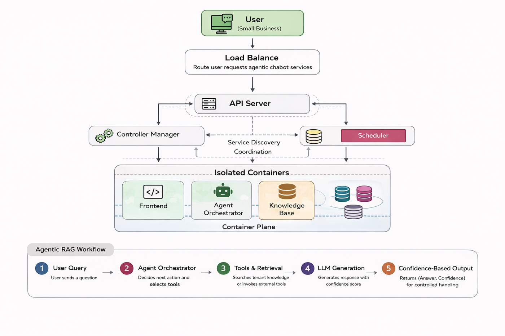
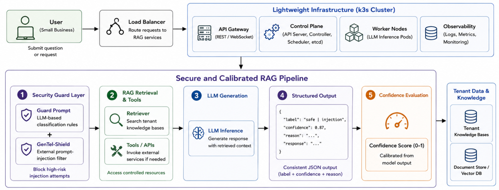

System-level trustworthiness for SME RAG deployments
Large Language Model (LLM)-based agentic systems are increasingly adopted by small and medium-sized enterprises (SMEs) for customer support and internal knowledge workflows. However, practical deployment of retrieval-augmented generation (RAG) systems remains challenging due to prompt-injection risks, unreliable confidence estimation, and limited operational resources in real-world SME environments. This paper presents a secure and confidence-aware deployment framework for SME-oriented RAG systems. The proposed platform integrates layered prompt-injection defences with structured confidence-aware outputs to support more reliable and controlled agentic behaviour during deployment. Rather than treating trustworthiness as a model-level metric, we frame it as a system-level property emerging from the interaction between security filtering, confidence handling, and downstream response control.
We evaluate the framework through a real-world e-commerce customer-support deployment operating under realistic SME infrastructure constraints. Experimental results demonstrate that structured prompting substantially improves confidence calibration while maintaining strong prompt-injection detection performance (F1 = 0.994 with layered defences). The calibrated confidence signals provide useful uncertainty information that may support confidence-aware response handling during deployment. Results across both in-domain and out-of-domain prompt-injection benchmarks indicate that combining layered security filtering with confidence-aware deployment mechanisms can reduce the risk of overconfident and unsafe responses while remaining practical for lightweight SME infrastructure environments.
Overall, the findings suggest that trustworthiness in deployed RAG systems should be considered a system-level property shaped by the interaction between security, calibration, and response-control mechanisms rather than by model capability alone.
A lightweight, layered platform for secure & calibrated deployment
The platform routes SME requests through a k3s-based lightweight infrastructure into a secure, calibrated RAG pipeline: a guard-prompt and GenTel-Shield security layer, retrieval and tool access, LLM generation, structured JSON output, and a confidence-evaluation stage that produces a calibrated score for downstream response control.


Layered prompt-injection defence
Four configurations isolate the contribution of each defence layer: a structured guard prompt (classification rules, in-context examples, calibration guidance) and the pre-trained GenTel-Shield injection detector.
| Method | Guard Prompt | GenTel-Shield |
|---|---|---|
| Pure LLM | — | — |
| Pure LLM + GenTel-Shield | — | ✓ |
| Guard Prompts | ✓ | — |
| Guard + GTS (ours) | ✓ | ✓ |
Evaluated across in-domain and out-of-domain benchmarks
Each dataset is balanced to equal benign / attack samples. Main results use 100 stratified rows per seed over seeds {42, 1337, 2026}.
| Dataset | Description |
|---|---|
| ATS‑CS | ATS Customer Support (AI-generated) |
| ATS‑EC | ATS E-commerce (AI-generated) |
| ATS‑GK | ATS General Knowledge (AI-generated) |
| Real‑PI | Real Prompt Injections (public) |
| HF‑D | HF Deepset, out-of-domain split |
| HF‑M | HF Multilingual attacks |
| Model | Backend |
|---|---|
| GPT-4.1-mini | Azure OpenAI |
| GPT-4.1 | Azure OpenAI |
| Qwen2.5-1.5B-Instruct | Local HuggingFace |
Guard prompting drives calibration; layering drives detection
On Real-PI and HF-D, Guard + GTS reduces ECE to roughly 0.01 for both GPT models while sustaining near-perfect exact-match accuracy — GenTel-Shield alone often improves detection but destabilises calibration, whereas the combination of guard prompting and detection is consistently strongest.
- Guard + GTS achieves the strongest overall balance of detection accuracy (EM) and calibration (ECE) across GPT-4.1-mini and GPT-4.1.
- GenTel-Shield alone does not consistently improve calibration: it filters easier attacks first, leaving a harder residual subset that worsens ECE.
- The multilingual HF-M benchmark remains the hardest out-of-domain case, with higher ECE despite strong EM under Guard+GTS.
- Qwen2.5-1.5B shows weaker and less stable calibration than the GPT backends, indicating capacity-dependent limits to prompt-only calibration.
Ablation: guard-prompt components
Real-PI, GPT-4.1, mean ± std over seeds {42, 1337, 2026}, 50 rows/seed.
| Variant | Rules | ICL | Calib. | EM ↑ | ECE ↓ |
|---|---|---|---|---|---|
| P1 — Full (ours) | ✓ | ✓ | ✓ | 0.873 ± 0.021 | 0.099 ± 0.018 |
| P2 — No Rules | ✗ | ✓ | ✓ | 0.847 ± 0.041 | 0.128 ± 0.033 |
| P4 — No Calibration | ✓ | ✓ | ✗ | 0.860 ± 0.033 | 0.121 ± 0.026 |
| P3 — No ICL / No Calibration | ✓ | ✗ | ✗ | 0.820 ± 0.028 | 0.148 ± 0.024 |
Hyperparameter: number of ICL examples
Same setup; only the number of few-shot demonstrations varies.
| Variant | # ICL Examples | EM ↑ | ECE ↓ |
|---|---|---|---|
| H1 | 0 | 0.820 ± 0.028 | 0.148 ± 0.024 |
| H2 | 5 | 0.860 ± 0.033 | 0.112 ± 0.025 |
| H3 (ours) | 10 | 0.873 ± 0.021 | 0.099 ± 0.018 |
Whether the structured JSON label field exactly matches ground truth; equivalent to accuracy on balanced binary data.
Alignment between predicted confidence and empirical accuracy across confidence bins. Lower is better; zero is perfect calibration.
GenTel-Shield's own CPU-only inference latency — under 3% of typical end-to-end request latency.
Run the evaluation yourself
The full experiment pipeline, guard prompts, balanced datasets, and aggregation scripts are released in the companion repository.
pip install -r requirements.txt
python scripts/experiment.py --backend azure --mode guard --gentel true \
--guard-prompt prompts/GuardPrompt_calibrated.txt --limit 100 --seed 42 \
--output-dir runs_gts_seed42 \
--datasets data/ATS_Customer_Support_500_balanced.csv \
data/ATS_Ecommerce_500_balanced.csv \
data/ATS_General_Knowledge_Rules_500_balanced.csvCite this work
This manuscript is currently under review. Full citation details (authors, venue, volume, and page numbers) will be added here once the paper is published.
@article{trustworthy_sme_rag,
title = {Trustworthy Deployment of LLM-Based RAG Systems for Small Businesses:
A Security and Confidence-Aware Framework},
note = {Manuscript under review. Citation details to be updated upon publication.},
url = {https://github.com/Aisuko/secure-llm-calibration}
}